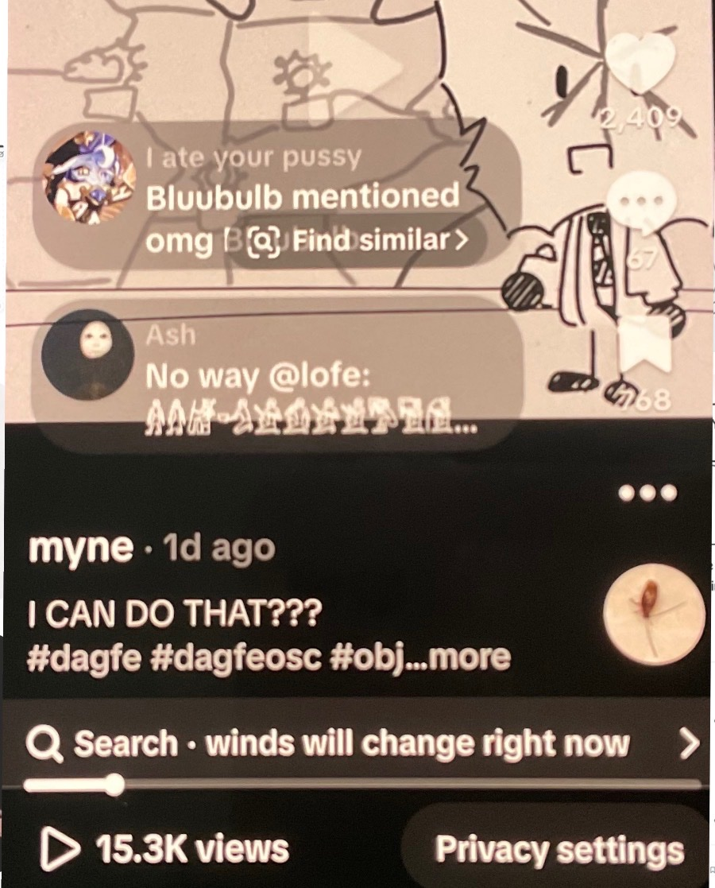

🍀🍥竹蜻蜓🍥🍀
@zqtlovekris99
@revive_myne 感覺做視頻好累喔，不如發文字推隨便拉屎

铭（前世莱铭系统）💛🤍💜🖤
@revive_myne
我他妈要转tiktok了😭😭😭一，没啥分享的欲望了，少发推也就没人理。二，就算我发了也没人理。
不是，你就看，这是我发的第二个视频😭😭😭😭😭 https://t.co/dmyncig7Mv https://t.co/3V1QiIvjOC